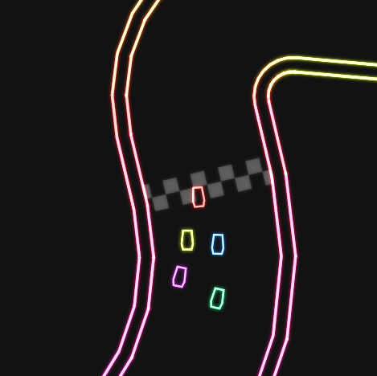
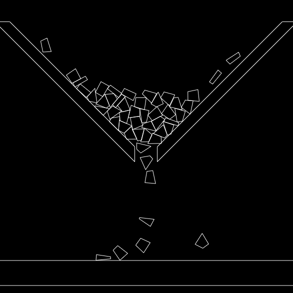
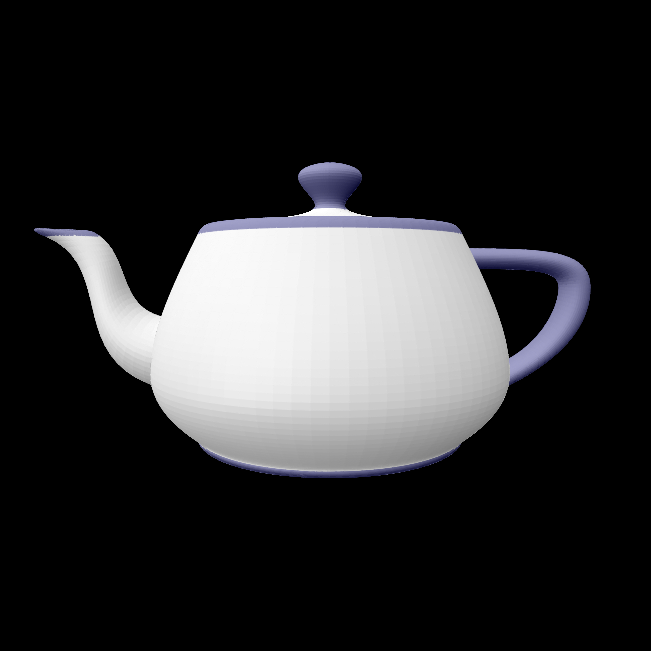
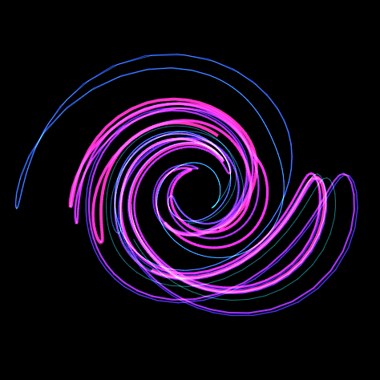

js-kart
A realtime browser based racing game using websockets.
This was built with a custom physics engine and uses a procedural track generator so each race is different. In order to acheive responsive realtime physics, client-side prediction and server reconciliation are used. Latency is is minimized by keeping packages small using avro serialization.
- No link yet -Physics Engine
A 2D rigidbody physics simulator.
This was built using a variety of techniques I found on various physics engine forums to optimize for a realtime browser environment. Collisions use sweep and prune for the broadphase, then GJK and EPA for the narrow phase. The collisions are then handled with an iterative impulse resolution system.
- Visit Project -3D Engine
A browser based 3d engine written in javascript.
This engine uses quaternion rotation to represent the camera and the painter's algorithm of drawing polygons. Polygons in the mesh are sorted back to front in a binary search tree and then pulled out for shading in order. Hold down the mouse to look around and use WASD to move.
- Visit Project -Strange Attactors
A simulation of mutltiple different strange attractors.
I used this project as a practice on how to apply quaternion rotation and projection before I added it into a polygonal rendering context. I added a few different attractors each with mutltiple particles that generate trails.
- Visit Project -